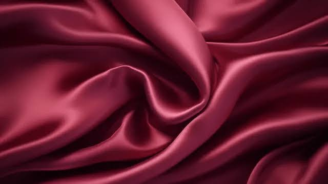
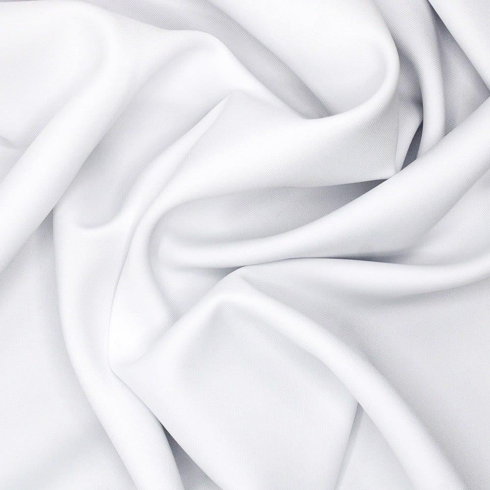

اكتشف عالم الأقمشة واختر ما يناسبك
نقدم لك مجموعة متنوعة من الأقمشة عالية الجودة لتناسب جميع احتياجاتك وأفكارك.
سواء كنت تبحث عن أقمشة الملابس أو المفروشات، ستجد لدينا ما يناسبك.

| نوع القماش | الصورة | الاستخدام |
|---|---|---|
| القطن |
|
الملابس اليومية والمفروشات |
| الكتان |
|
الملابس الصيفية والستائر |
| الحرير |
 |
الملابس الأنيقة والفساتين |
| الجينز |
|
البناطيل والسترات والملابس اليومية |